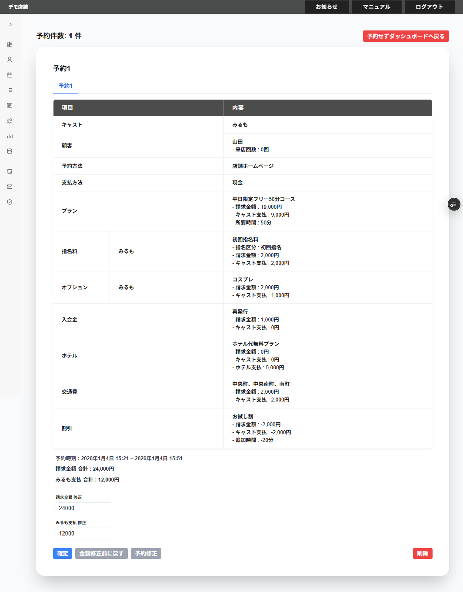

全予約確定をクリックすると、予約の確認画面が表示されます。
画面の左上に以下の項目が表示されます。
・予約件数
・予約の選択のタブ
複数の予約を全予約確定した場合は、複数の予約の選択のタブが表示されます。
選択した予約の予約内奥の下に以下の項目が表示されます。
・予約時刻
該当の予約する時刻が表示されます。
・請求金額
該当の予約の請求金額が表示されます。
・(キャスト名)支払
該当の予約で選択したキャストへのキャスト支払が表示されます。
※キャスト支払金額が0円以下になる場合は0円で登録されます。
※キャストを複数選択している場合は、複数のキャストへのキャスト支払の合計も表示されます。
※キャストを複数選択している場合は、指名料とオプションのキャスト支払を除いて、均等に配分されます。
指名料とオプションのキャスト支払は、指名料とオプションを扱ったキャストへのキャスト支払として登録されます。
・請求金額 修正
請求金額を修正したい場合、請求金額を入力することができます。
・(キャスト名)支払 修正
(キャスト名)へのキャスト支払を修正したい場合、(キャスト名)支払を入力することができます。
※修正した請求金額、キャスト支払で予約が登録されます。
・確定
選択している予約を確定して追加することができます。
・金額修正前に戻す
請求金額 修正・(キャスト名)支払 修正の表示を金額入力前に戻すことができます。
・予約修正
予約修正をクリックすると予約追加の画面に戻ることができます。
・削除
削除をクリックすると、選択している選択の予約のタブの予約を削除することができます。
・予約せずダッシュボードへ戻る
予約せずダッシュボードへ戻るをクリックすると、すべての予約を登録せずに、ダッシュボード画面へ戻ることができます。
